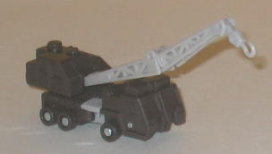
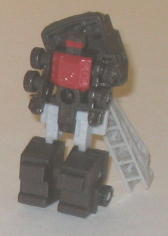
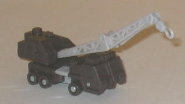
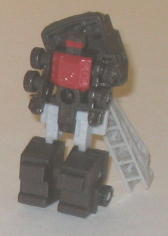
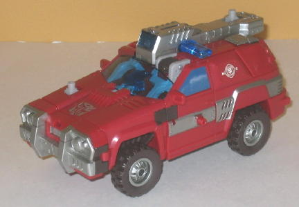
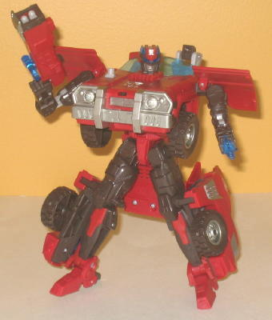

 
Allegiance : Autobot
Size : Mini-Con
Difficulty of Transformation : Very Easy
Color Scheme : Light milky gray, very dark brown, and some dull red
Rating : 5.0
(NOTE: Because this set is a repaint, this is not a full-blown review. This mainly covers any changes made to the set and the color scheme, and merely compares it to Armada Red Alert w/ Longarm. For a review on the mold itself, read the review of Armada Red Alert w/ Longarm here .)
 Longarm
Longarm


Allegiance
: Autobot
Size
: Mini-Con
Difficulty of Transformation
: Very
Easy
Color Scheme
: Light milky gray,
very dark brown, and some dull red
Rating
: 5.0
Like most Minicons that
were partnered with the larger toys from the Armada toyline, Longarm's
colors are more of a byproduct of Inferno's colors than anything else.
Still, he's at least a little different from the original Armada Longarm
Minicon, with red being the dominant color on the chest instead of blue,
and light gray taking the place of the original's tan. Still, I like the
blue and tan on the original more than the gray and red here, thogh I think
the dark brown used on this version of Longarm looks better than the black
on Armada Longarm (even though, truth be told, the dark brown is a little
too close to black for my tastes if you have both of the toys). But you
aren't buying this toy for the Minicon anyways... are you?
No mold changes have
been made to Movie Minicon Longarm.
 Inferno
Inferno


Allegiance
: Autobot
Size
: Voyager
Difficulty of Transformation
: Easy
Color Scheme
: Moderately dark red,
very dark brown, silver, and some transparent dark blue, light milky gray,
and dull dark blue
Rating
: 8.4
Inferno certainly fits
his name, with red by far being the main color, particularly in vehicle
mode. A lot of his dark brown parts become visible in robot mode, and was
a great choice for a secondary color-- it contrasts well with the red,
while avoiding the somewhat tired (though not bad-looking) "red-and-black"
color scheme again. He's also got some neat "Rescue Squad-esque" Autobot
symbols on his sides, and plenty of great paint apps. The silver looks
particularly good, and there's plenty of it. The transparent blue also
goes well with the other colors and fits the "realistic colors" aspect
of the Movie line very well, as oppposed to the weird transparent red on
the original use of this mold as Red Alert. Plus, the painted windows on
the side match the transparent blue on the front window VERY well.
No mold changes have
been made to Movie Inferno, and his electronics haven't been changed either
(so sadly, he still says "RED ALERT WOO WOO WOO" when you activate his
Powerlinx sound gimmick).
Overall, Movie Inferno w/ Longarm is a pretty unexpected release for the Movie line, given the fact that it's a fairly old toy at this point (and HUGE for a Voyager nowadays) and comes with a Minicon to boot (which obviously don't exist in the Movie-verse), but it's still a toy with a great color scheme (the best of all the releases, when it comes to Inferno) and tons of great gimmicks for the price. Good proportions not so much, but if that doesn't bother you that much, and you don't already have this mold, I'd mildly recommend these guys.
Review by Beastbot